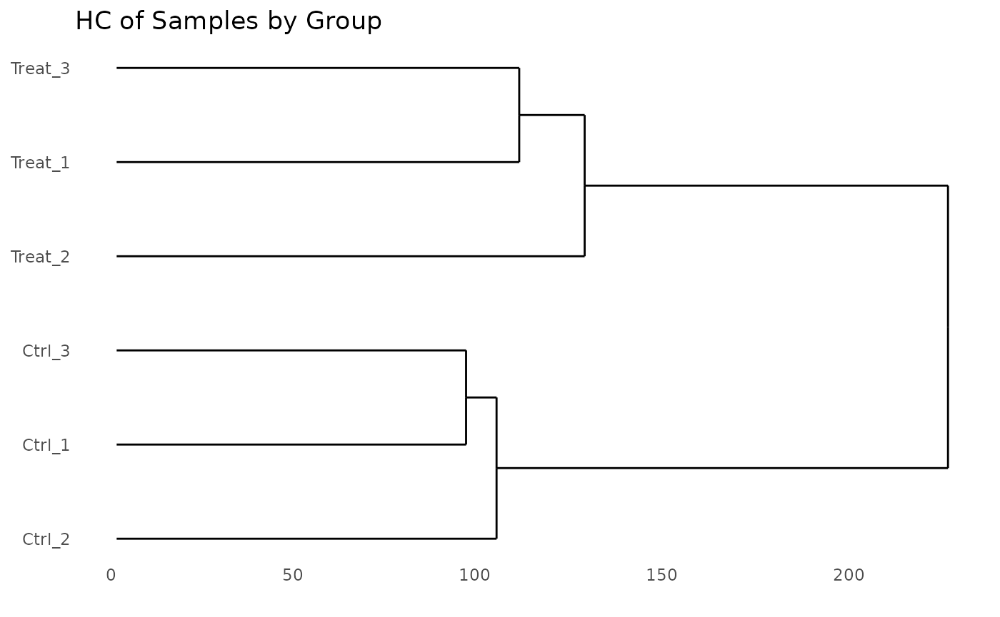
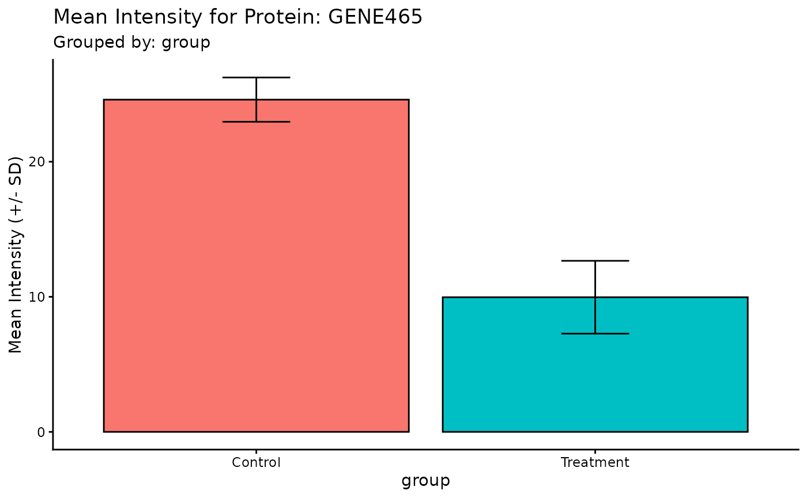

getting-started
getting-started.RmdIntroduction
The ProtPipe package provides a streamlined,
start-to-finish workflow for common proteomics data analysis tasks. It
is built around a central ProtData object, which stores
quantitative data, protein metadata, and sample metadata in a single,
cohesive unit. This vignette will walk you through a typical analysis,
from data loading to quality control and visualization.
Setup and Data Loading
First, we load the ProtPipe package.
library(ProtPipe)
#>
library(SummarizedExperiment)
#> Loading required package: MatrixGenerics
#> Loading required package: matrixStats
#>
#> Attaching package: 'MatrixGenerics'
#> The following objects are masked from 'package:matrixStats':
#>
#> colAlls, colAnyNAs, colAnys, colAvgsPerRowSet, colCollapse,
#> colCounts, colCummaxs, colCummins, colCumprods, colCumsums,
#> colDiffs, colIQRDiffs, colIQRs, colLogSumExps, colMadDiffs,
#> colMads, colMaxs, colMeans2, colMedians, colMins, colOrderStats,
#> colProds, colQuantiles, colRanges, colRanks, colSdDiffs, colSds,
#> colSums2, colTabulates, colVarDiffs, colVars, colWeightedMads,
#> colWeightedMeans, colWeightedMedians, colWeightedSds,
#> colWeightedVars, rowAlls, rowAnyNAs, rowAnys, rowAvgsPerColSet,
#> rowCollapse, rowCounts, rowCummaxs, rowCummins, rowCumprods,
#> rowCumsums, rowDiffs, rowIQRDiffs, rowIQRs, rowLogSumExps,
#> rowMadDiffs, rowMads, rowMaxs, rowMeans2, rowMedians, rowMins,
#> rowOrderStats, rowProds, rowQuantiles, rowRanges, rowRanks,
#> rowSdDiffs, rowSds, rowSums2, rowTabulates, rowVarDiffs, rowVars,
#> rowWeightedMads, rowWeightedMeans, rowWeightedMedians,
#> rowWeightedSds, rowWeightedVars
#> Loading required package: GenomicRanges
#> Loading required package: stats4
#> Loading required package: BiocGenerics
#> Loading required package: generics
#>
#> Attaching package: 'generics'
#> The following objects are masked from 'package:base':
#>
#> as.difftime, as.factor, as.ordered, intersect, is.element, setdiff,
#> setequal, union
#>
#> Attaching package: 'BiocGenerics'
#> The following object is masked from 'package:ProtPipe':
#>
#> combine
#> The following objects are masked from 'package:stats':
#>
#> IQR, mad, sd, var, xtabs
#> The following objects are masked from 'package:base':
#>
#> anyDuplicated, aperm, append, as.data.frame, basename, cbind,
#> colnames, dirname, do.call, duplicated, eval, evalq, Filter, Find,
#> get, grep, grepl, is.unsorted, lapply, Map, mapply, match, mget,
#> order, paste, pmax, pmax.int, pmin, pmin.int, Position, rank,
#> rbind, Reduce, rownames, sapply, saveRDS, table, tapply, unique,
#> unsplit, which.max, which.min
#> Loading required package: S4Vectors
#>
#> Attaching package: 'S4Vectors'
#> The following object is masked from 'package:utils':
#>
#> findMatches
#> The following objects are masked from 'package:base':
#>
#> expand.grid, I, unname
#> Loading required package: IRanges
#> Loading required package: Seqinfo
#> Loading required package: Biobase
#> Welcome to Bioconductor
#>
#> Vignettes contain introductory material; view with
#> 'browseVignettes()'. To cite Bioconductor, see
#> 'citation("Biobase")', and for packages 'citation("pkgname")'.
#>
#> Attaching package: 'Biobase'
#> The following object is masked from 'package:MatrixGenerics':
#>
#> rowMedians
#> The following objects are masked from 'package:matrixStats':
#>
#> anyMissing, rowMedians
library(ggplot2) # For plot customizationOur analysis begins with two primary data frames:
- A
data.framecontaining protein metadata and quantitative intensity data for each sample. - A
data.framecontaining the experimental design, mapping each sample to its condition.
# 1. Create a sample raw data frame
# 1. Create a more realistic sample raw data frame
# We will simulate 50 genes in total:
# - 40 genes that are stable (no change between conditions)
# - 5 genes that are up-regulated in the Treatment group
# - 5 genes that are down-regulated in the Treatment group
n_stable <- 400
n_up <- 50
n_down <- 50
n_total <- n_stable + n_up + n_down
# Set means for each group for log2-scale data
mean_stable <- 25
mean_up <- 51 # Higher expression
mean_down <- 12 # Lower expression
# Note: set.seed() makes the random data reproducible
set.seed(123)
# Simulate data for each sample group
data <- data.frame(
Ctrl_1 = rnorm(n_total, mean = mean_stable, sd = 2),
Ctrl_2 = rnorm(n_total, mean = mean_stable, sd = 2.5),
Ctrl_3 = rnorm(n_total, mean = mean_stable, sd = 2.2),
Treat_1 = c(rnorm(n_stable, mean_stable, 2), rnorm(n_up, mean_up, 2), rnorm(n_down, mean_down, 2)),
Treat_2 = c(rnorm(n_stable, mean_stable, 2.5), rnorm(n_up, mean_up, 2.5), rnorm(n_down, mean_down, 2.5)),
Treat_3 = c(rnorm(n_stable, mean_stable, 2.2), rnorm(n_up, mean_up, 2.2), rnorm(n_down, mean_down, 2.2))
)
# Introduce some missing values (NAs) to make it more realistic
# Set ~5% of the intensity values to NA
num_cells <- ncol(data) * n_total
na_indices <- sample(num_cells, size = round(0.05 * num_cells))
data <- as.matrix(data)
data[na_indices] <- NA
data <- as.data.frame(data)
# Combine into a single data frame with protein metadata
raw_data <- data.frame(
ProteinID = paste0("P", 1:n_total),
Gene = paste0("GENE", 1:n_total),
Status = c(rep("Stable", n_stable), rep("Upregulated", n_up), rep("Downregulated", n_down)),
data
)
# 2. Create the corresponding condition data frame
cond_df <- data.frame(
SampleID = c("Ctrl_1", "Ctrl_2", "Ctrl_3", "Treat_1", "Treat_2", "Treat_3"),
group = c("Control", "Control", "Control", "Treatment", "Treatment", "Treatment"),
batch = c("A", "B", "A", "B", "A", "B")
)
# 3. Use the constructor to create the ProtData object
pd_obj <- ProtPipe::create_se(data = raw_data, sample_metadata = cond_df)
#> `intensity_cols` not provided. Detecting numeric columns as intensity data.
# We can inspect the created object
print(pd_obj)
#> class: SummarizedExperiment
#> dim: 500 6
#> metadata(2): creation_method processing_log
#> assays(1): intensities
#> rownames: NULL
#> rowData names(3): ProteinID Gene Status
#> colnames(6): Ctrl_1 Ctrl_2 ... Treat_2 Treat_3
#> colData names(2): group batchInitial Quality Control (QC)
Before normalization and analysis, we should assess the quality of our data.
Protein Counts and Intensity Distributions
We can check the number of proteins identified in each sample and visualize the intensity distributions with boxplots.
# Get the number of identified proteins per sample
ProtPipe::get_pg_counts(pd_obj)
#> Sample Protein_Groups
#> Ctrl_1 Ctrl_1 478
#> Ctrl_2 Ctrl_2 482
#> Ctrl_3 Ctrl_3 471
#> Treat_1 Treat_1 469
#> Treat_2 Treat_2 477
#> Treat_3 Treat_3 473
# Plot the counts for each sample
ProtPipe::plot_pg_counts(pd_obj)
#> Warning: Use of `pgcounts$Protein_Groups` is discouraged.
#> ℹ Use `Protein_Groups` instead.
#> Ignoring unknown labels:
#> • fill : ""
# Plot the intensity distributions for each sample
ProtPipe::plot_pg_intensities(pd_obj)
#> Ignoring unknown labels:
#> • fill : "" These plots help us identify any samples that behave as strong
outliers.
These plots help us identify any samples that behave as strong
outliers.
Sample Correlation
Next, we can assess the reproducibility between replicates by plotting a correlation heatmap. Samples from the same condition should generally cluster together.
ProtPipe::plot_correlation_heatmap(pd_obj, order_by = "group", label_by = "group")
#> No numeric values detected in ordering variable. Applying alphanumeric sort.
#> Warning: Using `size` aesthetic for lines was deprecated in ggplot2 3.4.0.
#> ℹ Please use `linewidth` instead.
#> ℹ The deprecated feature was likely used in the ProtPipe package.
#> Please report the issue to the authors.
#> This warning is displayed once every 8 hours.
#> Call `lifecycle::last_lifecycle_warnings()` to see where this warning was
#> generated.
Data Pre-processing
ProtPipe includes functions for common pre-processing
steps like normalization and imputation.
Normalization
Here, we apply median normalization to align the intensity distributions across all samples.
pd_obj_normalized <- ProtPipe::median_normalize(pd_obj)
# We can re-plot the intensities to see the effect of normalization
ProtPipe::plot_pg_intensities(pd_obj_normalized)
#> Ignoring unknown labels:
#> • fill : ""
Imputation
Missing values must be handled before many downstream analyses. We will use the “down-shifted normal” (Perseus-like) imputation method. As this is a stochastic method, we set a seed for reproducibility.
set.seed(123) # Set a seed for reproducible imputation
pd_obj_imputed <- ProtPipe::impute_left_dist(pd_obj_normalized)
# The object should no longer have missing values
any(is.na(assay(pd_obj_imputed)))
#> [1] FALSE
# Create a preprocessing report
report <- generate_preprocessing_report(pd_obj_imputed)
#> Preprocessing report written to: preprocessing_report.mdDownstream Analysis and Visualization
With a clean, complete dataset, we can now explore the relationships between samples and proteins.
Hierarchial Clustering (PCA)
# The plot_pca function is a convenient wrapper that calculates and plots the results
ProtPipe::plot_hierarchical_cluster(pd_obj_imputed) +
labs(title = "HC of Samples by Group")
### Principal Component Analysis (PCA)PCA is a powerful tool for visualizing the primary sources of variation in the data and assessing sample clustering.
# The plot_pca function is a convenient wrapper that calculates and plots the results
ProtPipe::plot_PCs(pd_obj_imputed, condition = "group") +
labs(title = "PCA of Samples by Group")
UMAP
Lets plot a UMAP.
# The plot_pca function is a convenient wrapper that calculates and plots the results
ProtPipe::plot_umap(pd_obj_imputed, condition = "group", neighbors = 4) +
labs(title = "UMAP of Samples by Group") ### Differential Expression
### Differential Expression
Lets figure out which proteins are altered by the treatment.
DE <- ProtPipe::do_limma_binary(pd_obj_imputed, condition = "group", control_group = "Control", treatment_group = "Treatment")
# Or, filter to a specific subset of genes of interest
ProtPipe::plot_volcano(
DE,
label_col = "Gene"
) ### Protein Barchart
### Protein Barchart
Lets take a closer look at some of the differentially expressed proteins
# Plot a heatmap of all proteins, with columns ordered by clustering
ProtPipe::compare_protein(pd_obj_imputed, prot = "GENE465", prot_meta_col = "Gene", condition = "group")
Protein Expression Heatmap
Finally, we can visualize the expression patterns of the proteins across our samples using a heatmap. The data is automatically Z-scored by row to highlight relative expression changes.
# Plot a heatmap of all proteins, with columns ordered by clustering
ProtPipe::plot_proteomics_heatmap(pd_obj_imputed, protmeta_col = "Gene")
# Or, filter to a specific subset of genes of interest
ProtPipe::plot_proteomics_heatmap(
pd_obj_imputed,
protmeta_col = "Gene",
genes = c("GENE1", "GENE2", "GENE3", "GENE4")
)